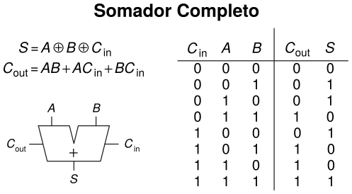
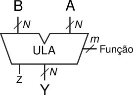

Ter o Quartus Prime instalado e funcional. Ele está disponível no site da Intel:
Crie um projeto no Quartus com o nome Aula1. Caso precise de auxílio, acesse a página:
Uma vez criado o circuito, deve-se testar o seu funcionamento através de simulação. Porém, para simular é preciso compilar o circuito. Existem três formas diferentes de fazer a compilação, veja no link abaixo:
Para verificar o funcionamento do circuito criado, utilize uma simulação:
Para os circuitos básicos, o Quartus provê um conjunto de modelos que obterão a melhor implementação para o circuito. Além disso, a Intel indica como boa prática de projeto a utilização desses modelos.
Para verificar se o código criado é realmente o circuito desejado, utiliza-se:
Para auxiliar, utilize:
O livro sobre lógica digital (free pdf) Digital McLogic Design de Mealy & Mealy no fim da página dos links úteis;
Dicas:
Antes de codificar, pense qual resultado que deseja obter;
Esboce no papel um diagrama representando esse objetivo;
Ou uma tabela da verdade. Ou o que for mais adequado.
Monte a estrutura básica do VHDL no seu arquivo de trabalho:
Utilize um componente por arquivo;
O nome do arquivo deve ser o nome da entidade desse componente;
Assim é mais fácil de reutilizá-lo no futuro.
Para alguns casos, o uso da configuração com generics permite:
Criar componentes mais versáteis, com largura de entrada/saída configuráveis.
Aumentando a possibilidade de reutilização desse código.
Verifique se o esquema RTL é funcionalmente similar ao seu objetivo de implementação.
Simule o funcionamento do seu circuito. Se houver uma tabela da verdade:
Ela já indica os vetores de entrada e os resultados na saída.
Caso não exista ou a quantidade de possibilidades é muito grande:
A lógica combinacional permite criar uma variedade de circuitos. Porém, em termos de blocos funcionais, os principais são:
Multiplex;
Decodificador;
Somador;
Comparador;
A Unidade Lógica e Aritmética (ULA ou ALU).
A conexão adequada desses circuitos, e a adição de registradores, permite a criação de um caminho de dados (ou fluxo de dados).
O projeto de um processador, ou qualquer circuito mais complicado, pode ser dividido em:
Fluxo de dados;
Unidade de controle.
A seguir, iremos implementar alguns desses circuitos combinacionais.
O multiplex, também chamado de MUX, é um componente combinacional muito utilizado em circuitos digitais. Ele permite a seleção de uma entrada, dentre as suas "n" entradas, que será direcionada para a saída.
Abaixo, temos o símbolo, circuito e tabela da verdade de um Mux 2x1 (2 entradas e 1 saída).
|
|---|
| Acima temos o símbolo e o circuito interno de um MUX com 1 bit do tipo 2x1. |
| Abaixo está a sua tabela da verdade. |
| Sel | Y |
|---|---|
| 0 | A |
| 1 | B |
Pode-se pensar no Mux como sendo um componente com:
2^N portas de entrada;
Uma porta de saída;
Onde, a cada instante, a seletividade entre uma dada entrada "X" e a saída:
Seja definida por um decodificador binário para decimal de N para 2^N;
Que possui na sua entrada o valor binário do "endereço" da porta X.
Permitindo que o sinal da entrada X alcance a saída.
A ideia é implementar um Mux 2x1 que possua dois vetores (de bits) de entrada e um vetor de saída. O que permitirá a reutilização do componente é a possibilidade de configurar a largura (total de bits) desses vetores para o valor desejado, de forma simples.
Uma forma prática de reutilizar os circuitos criados é através do uso:
Da declaração generic:
Uma forma de parametrizar o código, sendo possível alterar o parâmetro:
A cada instanciação do componente;
Ela é avaliada em tempo de compilação, pesquise a sua sintaxe e funcionamento;
E do tipo de dados std_logic_vector:
Veja a sua declaração e a forma de usar o parâmetro definido na generic;
Em algum dos links fornecidos.
Serão feitas duas implementações, ambas com comandos VHDL combinacionais:
A construção WHEN ELSE;
E a construção WITH SELECT.
Antes de começar a descrever o circuito:
Crie um novo projeto;
Crie o arquivo inicial com o mesmo nome que irá utilizar na entidade;
Adicione esse arquivo ao projeto;
Abra o arquivo e, utilizando o template, adicione as bibliotecas que serão utilizadas:
Library Clause: IEEE;
Use Clause: ieee.std_logic_1164.all
Ainda com o template, crie a estrutura de trabalho:
Entity. Se preferir, no fim da entidade, omitir o nome dela:
end para end entity.Architecture. Se preferir, no fim da arquitetura, omitir o nome dela:
end para end architecturePara descrever o Mux, use o template do Quartus de cada construção (como ponto de partida). Lembre-se das dicas acima.
Compile o projeto e verifique a implementação através do RTL Viewer.
No início, é um pouco complicado entender o diagrama RTL, não se assuste :-) .
Caso tenha algum problema na compilação, verifique que a entidade do arquivo atual é a Top-Level Entity.
Para testar o funcionamento utilize a simulação. Um ponto importante na simulação é saber quais os vetores de entrada que são significativos e qual a saída relativa a cada um deles.
Para realizar operações aritméticas, como a soma e subtração, utiliza-se o somador completo de 1 bit, mostrado abaixo:
|  | |||
|---|---|---|---|
| Tabela da Verdade | Diagrama |
A conexão de vários desses somadores nos permite criar a parte aritmética da Unidade Lógica e Aritmética (ULA).
A ULA é composta de:
Duas entradas para os operandos em uso;
Uma unidade funcional para cada operação executada;
Um seletor entre os resultados das operações executadas.
O símbolo da ULA está mostrado abaixo, onde:
N: é a largura do vetor de bits para as entradas (A e B) e saída (Y).
m: é o seletor de função e depende da quantidade funções implementadas (#func):
Z: é o flag indicador de resultado igual a ZERO.
|  |
|---|
| Símbolo de uma ULA com N bits |
Criar um segundo componente, utilizando um arquivo próprio, e implementar uma ULA com as seguintes características:
Dados com largura de 4 bits;
Utilizando 4 somadores completos interligados;
Execute a soma (A + B) (tipo unsigned);
Flag detector de resultado igual a zero.
Se sobrar tempo, adicione estas funções:
Subtração (A - B) (tipo unsigned);
Rodar 1 bit para a esquerda (dica: pesquise sobre barrel-shifter).
Comparação entre as duas entradas, indicando somente quando forem iguais:
Crie um novo projeto, como descrito acima, e inicie a sua codificação.
Compile o seu projeto e verifique a implementação através do RTL Viewer. Para testar, use a simulação. Não esqueça de definir vetores de teste significativos e as saídas correspondentes.
Página com links de referências sobre VHDL, Quartus, etc ...
Ir para o início do documento.